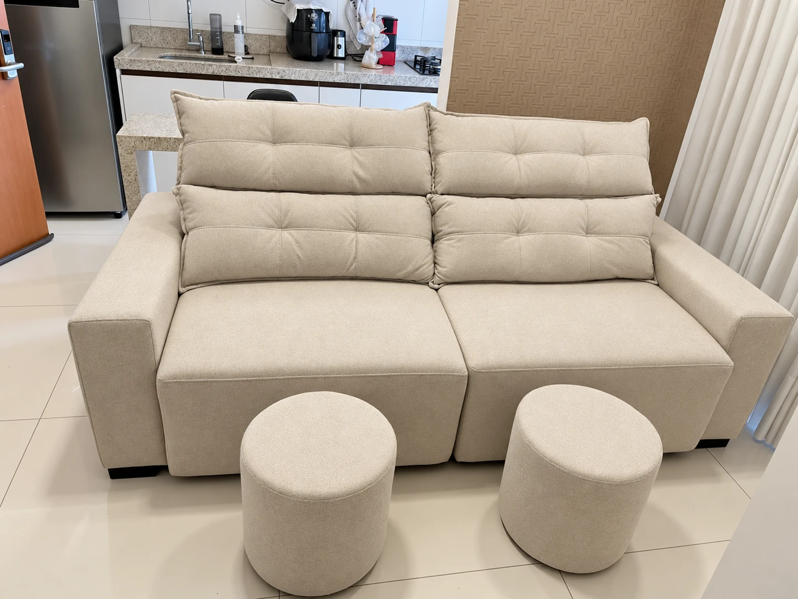

Ambientação com IAVer original
Sofá verde de linhas curvas.
Formato curvo e almofadas
Feito em Goiânia
Sofás, poltronas e peças renovadas.
Feitos para viver bem a sua casa.

Restauração com IAVer original
O cuidado está em cada escolha.
Fabricação de sofás, poltronas, puffs e cabeceiras. Uma conversa sobre proporções, revestimentos e o que funciona para o seu ambiente.
Conversar sobre uma peça nova ↗Uma nova textura, outro acabamento ou a recuperação do conforto. Envie fotos do seu estofado para avaliar as possibilidades de reforma.
Quero avaliar uma reforma ↗Limpeza, higienização e impermeabilização de estofados. Consulte a equipe sobre o cuidado indicado para o tecido da sua peça.
Consultar um cuidado ↗Sofás, poltronas e reformas reais.
Referências do Instagram da Genuíno.
Ambientação com IAVer original
Formato curvo e almofadas
Couríssimo com detalhes capitonê
Reforma com tecido Acquablock
Restauração com IAVer original
Conjunto em ambiente residencial
Reforma com estrutura de madeira aparente
Fabricação em tom neutro
Vista parcial do registroVer original
Couro e base de madeira · vista parcial
Ambientação com IAVer original
Reforma com linho Modern
Uma nova vida para o seu estofado.
A reforma pode mudar o revestimento e recuperar o conforto de uma peça. Envie fotos do estofado, conte o que precisa mudar e peça uma avaliação à equipe.
Avaliar meu estofadoComece por uma conversa.
Conte o que você precisa. Para uma reforma, vale ter em mãos uma foto da peça e as medidas aproximadas.